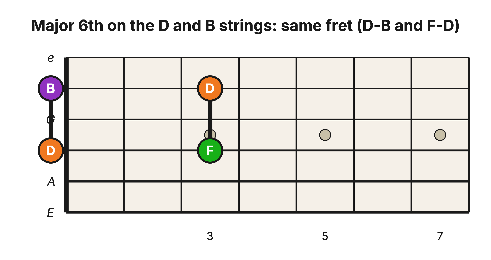
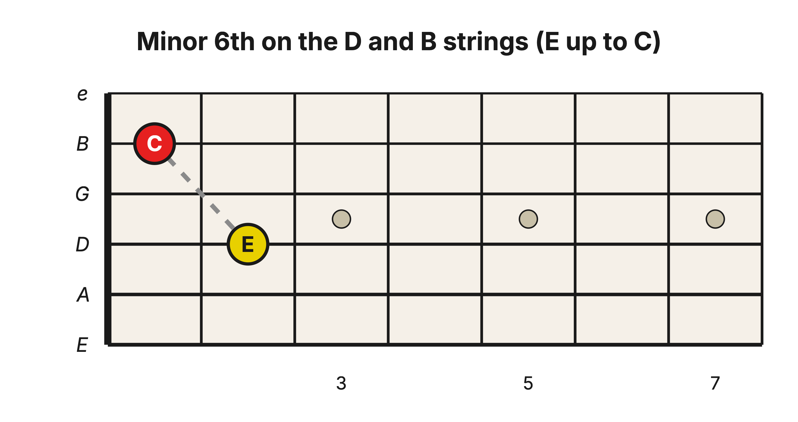
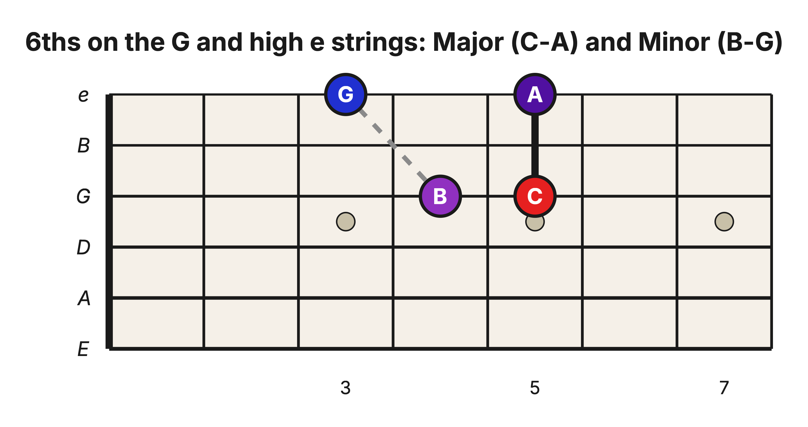
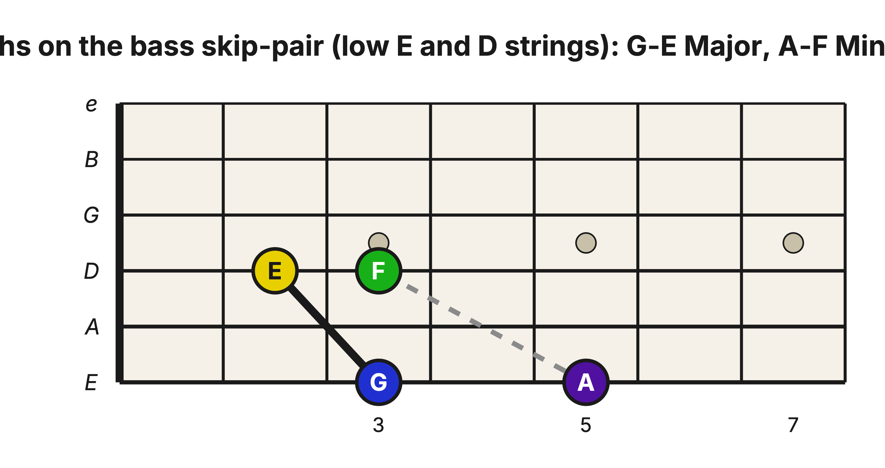
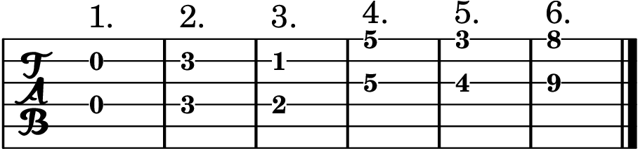
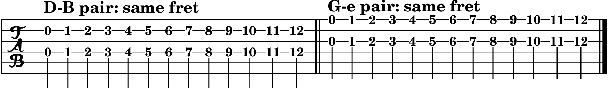
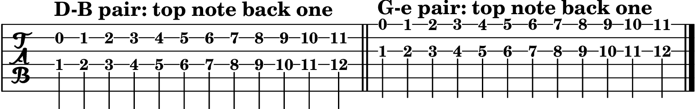
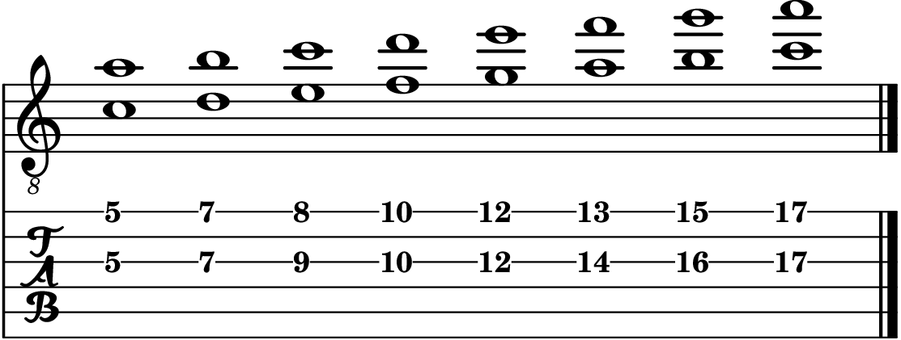

Level 2 · Chapter 21
The Fretboard: Major and Minor 6th Shapes (Skip a String)
You just built the 6th by flipping 3rds. Now let’s find it on the neck. One look at the numbers says this interval will not behave like the 3rd did: a 6th spans 8 or 9 half steps, so on a neighboring pair tuned in 4ths the top note would sit three or four frets up the neck from the bottom one. On the G–B pair, it would be four or five. A real stretch. The guitar has a better idea: skip a string.
Skip a string and the 6th falls under your hand
Jumping over one string covers 9 half steps of tuning on the treble side. From the D string over the G to the B string is a Perfect 4th plus the G–B Major 3rd, 5 + 4. From the G string over the B to the high e is the same two pieces in the other order, 4 + 5. Nine half steps is exactly a Major 6th. So on both treble skip-a-string pairs, the guitar hands you the same gift it gave you on the G–B pair: a Major 6th built right into the open strings.
The D–B pair (skip the G string)
Major 6th: two notes on the same fret. Play the open D string and the open B string together, letting the G string sit quiet. That is D up to B, a Major 6th. Fret both strings at the 3rd fret and you get F up to D, another Major 6th. Same fret, both strings, at any fret you like.

One practical note: the skipped string in the middle stays quiet. Let the underside of your bottom-note finger lean lightly against it, or pluck the two strings fingerstyle with your pick hand.
Minor 6th: pull the top note back one fret. E on the D string (2nd fret) up to C on the B string (1st fret) is a minor 6th. It is exactly the E–C you built in the last chapter’s exercise, now under your fingers.

The G–e pair (skip the B string)
Skip over the B string and the story repeats exactly. Major 6th: same fret, both strings (C at the 5th fret of the G string, A at the 5th fret of the high e). Minor 6th: top note back one (B at the 4th fret up to G at the 3rd).

Notice something pleasant here. When you learned your 3rds, the odd G–B pair forced you to learn two different worlds of shapes. With 6ths, both treble skip-pairs hop across that odd pair exactly once, so they agree with each other: one pair of shapes covers both. The quirk that split your 3rds unifies your 6ths.
The bass skip-pairs
Skipping a string down in the bass (low E over the A to the D string, or A over the D to the G) covers 10 half steps of tuning, one more than the treble pairs. So both shapes shift back a fret: Major 6th = top note back one, minor 6th = top note back two.

The treble pairs will get most of your traffic; the clear, singing register up there is where guitarists usually play their 6ths. But the bass shapes are the same idea, one fret further back.
Hear it
- Minor to Major, one fret: on the D–B pair, play E–C (2nd fret, then 1st fret), a minor 6th. Now slide the top note up one fret to C♯: E–C♯, a Major 6th, sitting level with the E. Dark-sweet, then bright, one half step apart.
- A 3rd and its flip: play E up to G on the low E string (open, then the 3rd fret), the small dark minor 3rd. Then play the 6th shape G–E: G at the 3rd fret of the low E string, E at the 2nd fret of the D string. The same two letters turned over, and the sound turns from small and dark to wide and warm.
Exercises
Same goal as with the 3rds: fluency. You want to make either 6th, on either pair, anywhere on the neck, without stopping to think. Two of these lean on the fact that the shapes are movable.
Exercise 1: Spot the 6th
Each item gives you two notes on a skip-a-string pair. Find them, name both notes, and call the interval a Major 6th (9 half steps) or a minor 6th (8 half steps).
- D string, open + B string, open
- D string, 3rd fret + B string, 3rd fret
- D string, 2nd fret + B string, 1st fret
- G string, 5th fret + high e string, 5th fret
- G string, 4th fret + high e string, 3rd fret
- G string, 9th fret + high e string, 8th fret

Answer key
- D–B, Major 6th
- F–D, Major 6th
- E–C, minor 6th
- C–A, Major 6th
- B–G, minor 6th
- E–C, minor 6th (the same two notes as item 3, an octave higher)
Exercise 2: The Major 6th, up the neck
Make the same-fret shape on the D–B pair and slide it up one fret at a time, from the open strings to the 12th fret, playing the 6th at every stop. Then do the same on the G–e pair.

To name them as you go, here are seven Major 6ths to build and find:
C–A, D–B, F–D, G–E, E–C♯, A–F♯, B–G♯.
Exercise 2 check. At 60 bpm, play one pair every two clicks up and down on both treble skip-pairs. Then build four randomly called Major 6ths without sliding into them. Pass when both notes ring, all four upper notes are correct, and each interval is linked to the minor 3rd it inverts.
Exercise 3: The minor 6th, up the neck
Use the same motion with the top note pulled back one fret on both pairs. Because the upper note would otherwise fall before the nut, begin the minor-6th slide with the lower note at fret 1, then continue one fret at a time to fret 12.

Seven minor 6ths to name as you go:
E–C, A–F, B–G, C♯–A, F♯–D, G♯–E, D♯–B.
Exercise 3 check. Use the same tempo and random test as Exercise 2. Pass when four randomly called minor 6ths are formed directly, both notes ring, and each interval is linked to the Major 3rd it inverts.
Exercise 4: Play in 6ths (the whole C Major scale)
The musical one. Harmonize the C Major scale in 6ths on the G–e pair, from the 5th fret up to the 17th, and say whether each step is Major or minor:
C–A, D–B, E–C, F–D, G–E, A–F, B–G, C–A.

Answer key
C–A Major, D–B Major, E–C minor, F–D Major, G–E Major, A–F minor, B–G minor, C–A Major.
Every one of these is one of your harmonized 3rds flipped upside down: C–A is A–C turned over, D–B is B–D turned over, and so on up the scale. That is why every quality swapped: the minor 3rds became Major 6ths and the Major 3rds became minor 6ths.
Try it yourself
Build a Major 6th on the D–B pair with the bottom note at the 7th fret. Name both notes. Then make it minor and name the new top note. Check below.
Answer key
The 7th fret of the D string is A, and its same-fret partner on the B string is F♯. A–F♯, a Major 6th. Pull the top note back one fret and F♯ becomes F: A–F, a minor 6th.
Success standard for Exercises 2–4. At 60 bpm, play each movable 6th run up and down with one pair every two clicks, then play the harmonized C Major scale with one pair per click while naming every quality. Finish with four randomly called Major/minor 6ths on either treble skip-pair. Pass when both notes ring together, all four random qualities are correct, and you can name the inverted 3rd for each one.
Count your two-note shapes now: 3rds on every neighboring pair, 6ths on the skip-a-string pairs, and the 4ths, 5ths, and octaves from Level 1. And the 6ths cost you almost nothing, because every one of them is a 3rd seen from the other side. You did not learn a new interval so much as turn over one you already owned.